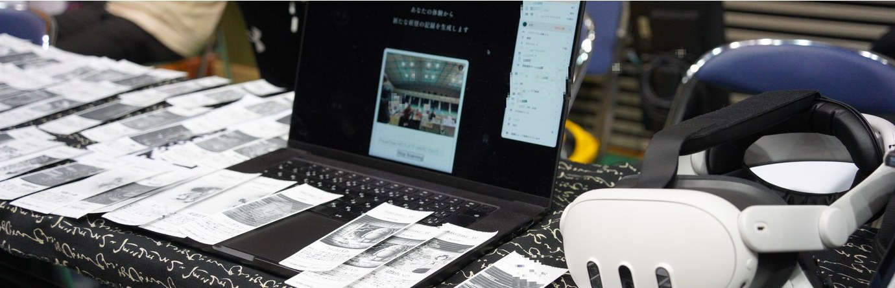

Yōkai-Generating Apparatus妖怪生成装置

A visitor describes an experience in free text under four prompts: when, where, what was sensed, and what impression remained. The apparatus embeds the description, retrieves the closest entries from the folklore database, and generates three candidate names and short narratives in that context. After the visitor selects, edits, or supplies a name, an image is generated in one of five registers (ink wash, illustrated scroll, woodblock print, narrative ink-line drawing, contemporary digital) and printed on 80 mm thermal paper, which fades indoors within months. Image generation initially used a fine-tuned Stable Diffusion model and moved to Gemini (Nano Banana) in the second stage. The information needed to describe a yōkai was extracted from the yōkai-studies literature and built into the interface.
